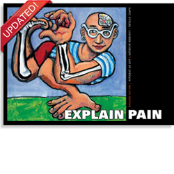

How pain works¶
Warning
Section incomplete and in note form only.
Pain starts with a signal¶
Summary content for part 1 of this page:
- Types of nociceptors
- Nerve bundles
- Dorsal root ganglion
- Chemical signalling
- Top down facilitation and suppression of signalling
Conclusion: changing how we think and feel about pain doesn’t only change things in our head. It can also change the strength of the signals that arrive from our bodies.
But signals aren’t painful on their own¶
- Signals != Pain
- Signals are interpreted in a context
- Signals interpreted as dangerous feel painful
- Sometimes, signals can be misintepreted
- Narrative examples
Conclusion: Signals from our body are only one type of information our pain system uses. How relaxed we are, how we feel, and what we expect to happen also play a big part in how much pain we feel.
Pain can sometimes be unhelpful¶
Pain is often an important signal, alerting us to danger. However as we have learnt pain does not always mean that our body is being damaged.
After joint surgery it is important to keep moving. Joints which are kept still for long periods become stiff, and this stiffness can also become painful.
In addition to using painkilling drugs, it’s important to do everything you can to relax and stay calm to reduce your pain, because this will enable you to keep your joint moving.
Next: Easy ways to be more comfortable after surgery
We had to keep this section very short, but the physiology and psychology of pain are fascinating. If you’d like to read more detail on how the body’s pain system works, and the links between our thoughts and feelings and pain, we recommend “Explaining Pain”, by Dr David S. Butler and Prof G. Lorimer Moseley.
{kind=link}